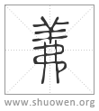

羛
《墨翟書》義从弗。魏郡有羛陽鄉，讀若錡 [魚綺切，ŋĭe] 。今屬鄴，本內黃北二十里。
宋代 徐鉉 徐鍇 注釋
臣鉉等曰：此與善同意，故从羊。
清代 段玉裁《說文解字注》
- 己之威義也。
言己者、以字之从我也。己、中宮。象人腹。故謂身曰己。義各本作儀。今正。古者威儀字作義。今仁義字用之。儀者、度也。今威儀字用之。誼者、人所宜也。今情誼字用之。鄭司農注周禮肆師。古者書儀但爲義。今時所謂義爲誼。是謂義爲古文威儀字。誼爲古文仁義字。故許各仍古訓。而訓儀爲度。凡儀象、儀匹、引申於此。非威儀字也。古經轉寫旣久。肴襍難辨。據鄭、許之言可以知其意。威義古分言之者、如北宮文子云有威而可畏謂之威、有儀而可象謂之義、詩言令義令色、無非無義是也。威義連文不分者、則隨處而是。但今無不作儀矣。毛詩。威義棣棣。不可選也。傳曰。君子望之儼然可畏。禮容俯仰各有宜耳。棣棣、富而閒習也。不可選、物有其容不可數也。義之本訓謂禮容各得其宜。禮容得宜則善矣。故文王、我將毛傳皆曰。義、善也。引申之訓也。
- 从我。从羊。
威儀岀於己、故从我。董子曰。仁者、人也。義者、我也。謂仁必及人。義必由中𣃔制也。从羊者、與善美同意。宜寄切。古音在十七部。
- 墨翟書義从弗。
墨翟書、藝文志所謂墨子七十一篇也。今存者五十三篇。義無作羛者。葢歲久無存焉爾。从弗者、葢取矯弗合宜之意。
- 巍郡有羛陽鄉。讀若錡。
此以地名證羛字。又箸其方音也。凡古地名多依䚻俗方語。如蓮勺呼輦酌。卑水呼班水。鮦陽呼紂陽。大末呼闥末。剡呼舌剡反。酈呼蹢躅之蹢。曲逆呼去遇。如是者不可枚數。羛陽讀若錡、同也。然注家皆讀羛陽、虛宜切。與錡音稍不同也。
- 今屬鄴。本內黃北二十里鄉也。
按此十二字。乃後人箋記之語。非許語也。鄴、內黃皆魏郡屬縣。羛陽鄉本在內黃北二十里。司馬紹統郡國志曰。魏郡內黃有羛陽聚。劉注。世祖破五校處。光武紀大破五校於羛陽降之。李注。羛陽聚屬魏郡。故城在今相州堯城縣東。諸本有作茀者、誤也。左傳。晉荀盈如齊逆女。還。卒於戲陽。杜注。內黃縣北有戲陽城。按漢晉皆在內黃北。魏地形志無內黃縣。當是倂於鄴。則羛陽亦在鄴矣。故知必後人箋記語也。戲羛音同。許宜反。左氏傳。有戲陽速。則戲陽又爲氏姓。